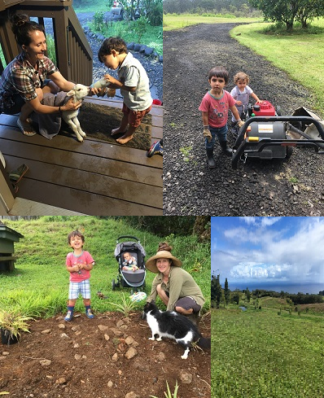
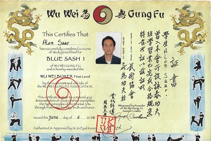

Our Hobby Farm
We currently live on an off-grid farm
up the Hamakua coast on the island of Hawaii. It is a very relaxed and quite life style and we enjoy it very
much. There is a different rhythm to life on the island and it allows us to spend a lot of time together and
enjoy the little things in life.
The east side of the island is generally very quite and there are
not a lot of activities that are common when you live next to the city.
The farm was started by my wife and was raw land when she first moved here but we are slowly but surely
working
on developing it further.
We have quite a few animals that mainly help us as lawn mowers as things grow so fast over here. They also
help replenishing the soil as the area that we live in was farmed
aggressively in the past. We have a little seasonal stream that runs through the property and we slowly work
out way to make it more accessible for us.
There is a lot of work involved with developing the
place (not to mention the regular upkeep). It is even more challenging with two little kids but we manage
and the kids love helping
out however they can. I personally enjoy the farm work and whenever I have free time (which is not often) I
put my work clothes on and get to work. Most of the time though, there is always something that requires my
attention and there are plenty of projects to be completed.

Saxophone and guitar
As a yong kid My parents wanted me to learn how to play an instrument and so I choose to learn how to play the saxophone. I was more into soccer at that stage in life and although I has an instrument, and I received private lessons for a while, eventually I gave up on it. With that, It always remained a hobby of mine and although I never became very good at playing, I still own a saxophone and try to keep learning and improve all the time. Hopefully I would be able to play songs and rhythms for fun one of these days. I also like playing the guitar and similarly to the saxophone, I am still trying to learn and improve my skills every day.
Martial Art - Gong Fu
Throughout my life I was always an active person. Whether it was sport, exercising or hiking I was always
doing something. When I was younger, I used to play a lot of soccer but as I got older I started drifting
away from soccer and started getting interested in Martial Arts. Based on a friend's recommendation I tried
a system called "Wu Wei Gung
Fu" and absolutely loved it.
I started practicing with group lead by the head of the system
(Si-Jo)
twice a
week for a few years and it was fantastic. Aside from the fitness aspect of the practice (which was
intense), I learned other things such as patience, control, focus, coordination and discipline. I practiced
Wu Wei Gung Fu for about 3-4 years and my skills improved a lot during that time. I also passed a test and
received a blue Sash 1 (see image to the left) which recommended my progression.
Unfortunately, ever since I moved to Hawaii it became harder and harder for me to exercise or practice
martial arts. A few
years ago I was also injured in an accident. I still suffer from that injury to this day which makes
it impossible for me to engage in anything similar to martial art at the moment. With that, I hope and know
that I'll get back to practicing sometime in the future.

Soccer
As a child I was obsessed with soccer and you could always find me holding a soccer ball, playing soccer or trying to gather some friends to go and play. When that did not work I just played by myself. As I grew older I played in a semi professional club for a year but eventually left the team. Now days I mostly watch soccer. Unfortunately, soccer is not very popular in the US so I don't get to watch many games anymore, especially due to the time difference which requires me to wake up early in the morning to watch a live game. My favorite team is Maccabbi Tel-Aviv FC and I still follow them online and watch their game highlights every week. If I'm lucky than the world cup is played in a country with relatively similar time zone to Hawaii and I can catch some of the games. Nevertheless, I always try to watch the final.